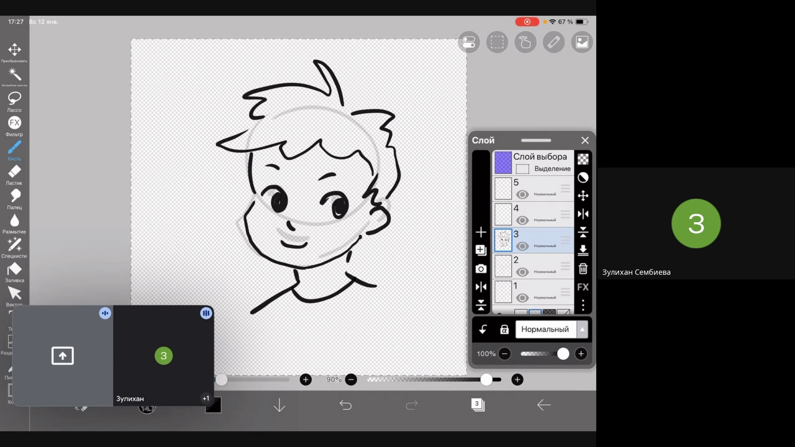
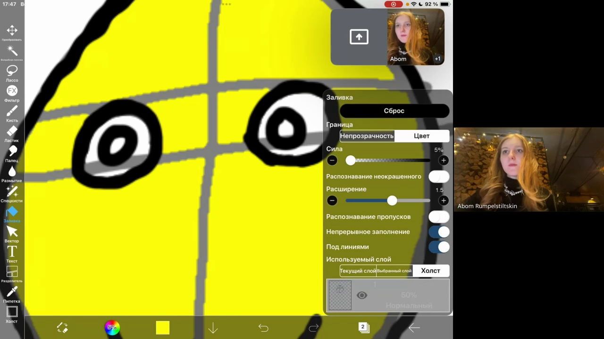

Урок 1
Добро пожаловать в мир рисования и графики на iPad!
Что мы узнали

Учились рисовать лицо и пользоваться инструментами и функциями Ibis Paint:
-
Слои (Layers):
- Слои — это как листы бумаги, которые можно складывать друг на друга.
- Мы научились создавать, копировать и удалять слои.
-
Прозрачность (Transparency):
- Настройка прозрачности позволяет делать элементы более "прозрачными" или "плотными".
-
Горячие клавиши (Hotkeys):
- Быстрые сочетания клавиш для ускорения работы и экономии времени.
-
Стабилизация пера (Pen Stabilization):
- Функция, которая делает линии более ровными и плавными, даже если рука немного дрожит.

Домашнее задание
Повторить пройденное:
-
Обзор приложения Ibis Paint:
- Исследуй приложение: узнай, для чего нужны кнопки, посмотри на панель инструментов и настройки.
-
Создание нового холста (New Canvas):
- Создание холста:
- Задай размеры.
- Выбери разрешение.
- Укажи ориентацию (горизонтальная или вертикальная).
-
Работа с кистями (Brushes):
- Поэкспериментируй с кистями:
- Выбери разные виды кистей.
- Настрой размер и прозрачность кисти.
-
Основы слоев (Layers):
- Создай, продублируй и удали несколько слоев.
- Сделай группировку и упорядочивание слоев.
Попробуй:
-
Маски слоя (Layer Masks):
- Узнай, как использовать маски для редактирования без изменения рисунка.
-
Кисти для контуров (Brushes for Outlines):
- Практикуйся в создании аккуратных линий:
- Настрой стабилизацию пера для плавных контуров.
- Используй инструменты коррекции линий.
87 Основные инструменты (Tools):
- Поработай с инструментами:
- Ластик (Eraser): для исправления ошибок.
- Выделение (Selection Tool): для выбора частей рисунка и их редактирования.
Пробуй и экспериментируй, ты на правильном пути! 😊
Если будут вопросы - смело обращайся к преподавателю!
Рекомендации
- Для расширенных возможностей рисования можно приобрести специальный стилус
- Также можно использовать программу Procreate, которая обладает большими
возможностями